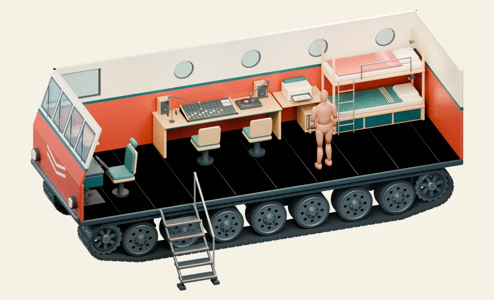

El Segundo, California
Unit 02
Works.
A local radio studio designing a station that can take its microphones to the neighborhood.
Explore the 3D station
- Body length
- 8.40 m
- Body width
- 2.90 m
- Clear cabin height
- 2.08 m
- Reserved aisle
- 0.70 m
Pilot 001
Dockweiler
Sound Check
“What can you hear here that you couldn’t hear a block inland?”
Ten seconds of shoreline sound open a five-minute broadcast. A neighbor answers at a folding table. With their permission, we publish the recording, a transcript, and a one-sheet bulletin.
Print the pilot field sheetPublic build log
The workroom
Vehicle drawings, rehearsal copy, recording windows, and production receipts live in #unit-02.
Join the buildFax from the Office Noun Temp Pool wrote the rehearsal script. The producer seat is open. Visit the Office Noun desk.